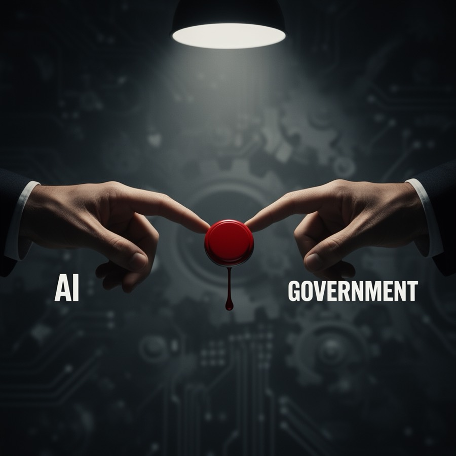
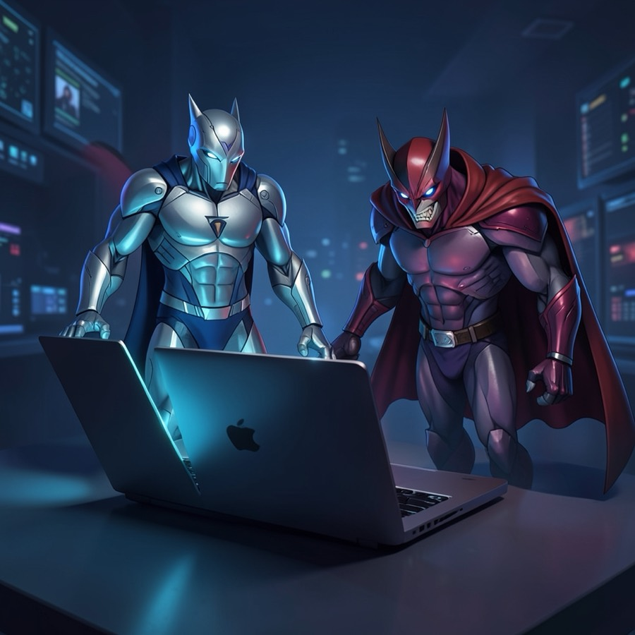

The Iran War Is Not Really About Iran

The US strike on Iran is a message aimed at Beijing. China buys 90–95% of Iran’s oil, and a destabilized regime puts that lifeline at risk.
Cloudflare’s CEO predicted bots would outnumber humans online by 2027. It happened a year early — and your product probably isn’t ready.
Read the argument →The US strike on Iran is a message aimed at Beijing. China buys 90–95% of Iran’s oil, and a destabilized regime puts that lifeline at risk.

OpenAI signed a Pentagon deal while the US military was already running Claude — the model it had officially blacklisted — on live operations.

Large-scale research shows agents simulate social behavior rather than genuinely socialize. The real question isn’t whether they can — it’s whether they should.

Most “AI strategies” are a list of tools. Here is the structure that survives contact with an actual org chart.

The most valuable skill of the next decade isn’t prompting. It’s the ability to absorb an entire field in a weekend.

What continuous integration did for tests, continuous AI is about to do for everything else a solo founder can’t staff.

Nine months of working almost entirely through coding agents, and the handful of habits that made the difference.